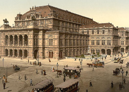
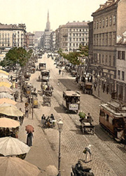
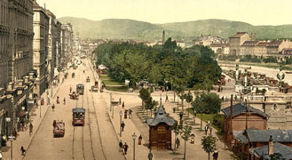

Vienna 1900 has become a major cottage industry for writers, scholars, cultural historians, art historians, and museum curators alike. To quote from my own Hitler in Vienna, 1907-1913: Clues to the Future, "Gathered in that city were more of the artistic and intellectual luminaries who created the modern sensibility that in any other one metropolis."
By now, of course, it is received knowledge that Sigmund Freud, working in the city of dreams, turned the interpretation of dreams into a science. But there was a bevy of other pioneering thinkers, writers, musicians, visual artists, architects, and philosophers at work in Vienna 1900, as well.
The sensuous Jugendstil (literally “Young Style”) line snaked through the paintings of the painter Gustav Klimt, the polyphonies of the composer Gustav Mahler and Hugo Wolf, and the architecture of Otto Wagner, Josef Maria Hoffmann, and Joseph Maria Olbrich. In literature, Arthur Schnitzler, Hermann Bahr, Peter Altenberg, and Hugo von Hofmannsthal all added their insights to Impressionistic letters.
Soon, this first wave of innovators was succeeded by another, an expressionist grouping that cut through the old forms as well as through the Jugendstil line. In music, Arnold Schoenberg and Alban Berg broke the tonal patterns of Western music; the painters Oskar Kokoschka and Egon Schiele did much the same for painting, as did Adolf Loos in architecture, the polymath Karl Kraus in literature, and the young intellectual Ludwig Wittgenstein in philosophy.
This cultural revolution did not take place in a political or social vacuum. Vienna 1900 was the capital of a far-flung empire encompassing over a dozen nationalities. The centrifugal national pull of these subject peoples would ultimately pull the empire apart. But at the turn of the century the Habsburg emperor, Franz Josef, already an old man who had been at the helm since 1848, still had his hand firmly on the rudder of the ship of state. But that grip was slipping more each year.
The city itself was a study in facades: the new Ringstrasse with its monumental array of public buildings diverted the attention of the populace from the fact of a loss of military power in the advent of the rise of Germany, and from the fact that poverty and homelessness were rampant. The population of the city had increased twenty times in two centuries, reaching two million by the end of the nineteenth century. Between the Ringstrasse and the Vienna Woods lay many districts of slums, where occupants lived ten to a room, and some bettgehers rented only a bed to sleep in the hours their rightful occupants were working. Others, not so fortunate, made do with an underground cell in the city’s labyrinthine sewers.
In many ways, the artists and intellectuals of Vienna 1900 were reacting to the Habsburg façade, to the pomposity of empire and its dark underbelly of poverty. But there were political animals at work in Vienna 1900, as well. Bertha von Suttner devoted herself to the cause of peace and was the first female recipient of the Nobel Peace Prize; as Alfred Nobel’s secretary for a time, she was the one to convince the inventor of dynamite to endow the Nobel Prize. Theodor Herzl turned a romantic dream of a Jewish homeland into the reality of Zionism. Viktor Adler was shaping a new brand of evolutionary socialism. Meanwhile, the mayor of Vienna from 1897 to 1910, Karl Lueger, was appealing to the masses, founding a form of municipal socialism, but also laying the groundwork for twentieth-century demagoguery with his anti-Semitic rhetoric.
Men of the deed were also gathered in the Austrian capital at the turn of the twentieth century. Leon Trotsky, in exile from Russia, played chess at the Café Central and dreamed of revolution; Stalin came to Vienna to study the nationalities question. And for six down-and-out years, young Adolf Hitler lived a bohemian existence, a hunger artist, but also an avid student of Lueger’s mass movement.
All of this makes for good drama, and there are a number of writers who have attempted to convey a sense of the time and place. Stefan Zweig, who came of age in Vienna 1900, writes compellingly and lovingly of that bygone world in The World of Yesterday. Schnitzler also wrote of the time in My Youth in Vienna. The American historian, Carl Schorske, began in the 1960s to write academic articles about various aspects of Fin-de-siecle Vienna, though the book of that title did not appear until 1980. Alan Janik and Stephen Toulman also provide an introduction to the subject in their 1973 Wittgenstein’s Vienna. My own Hitler in Vienna, which juxtaposes Hitler’s down-and-out years against the largely Jewish renaissance of the same time appeared in the original German in 1980, and then in English in 1982. William Johnston’s magisterial The Austrian Mind supplies the curious reader with scores of short articles on various of the movers and shakers of Vienna 1900. Frederic Morton takes a more popular narrative approach with his Nervous Splendor and Thunder at Twilight. Additionally, there are dozens of works on painters, the arts and crafts movement and architecture, as well as biographies of many of the individuals listed above. Prominent among such overviews is Peter Vergo’s Art in Vienna. Alessandra Comini has also provided clear and concise introductions to the work of both Klimt and Schiele. For a historical and political primer on the Habsburg Empire, you cannot go wrong with Edward Crankshaw’s The Fall of the House of Habsburg, or with Alan Palmer’s Twilight of the Habsburgs.
My Viennese Mystery series is inspired by this renaissance, and while my main protagonist, Advokat Karl Werthen, his wife, Berthe, and their families, domestics, and incidental colleagues are fictional, each book also features one or more historical characters from Vienna 1900 at the center of the action. Additionally, one of the series’ ongoing characters, the criminologist Hanns Gross, is an actual historical figure. You will meet Werthen and company in the books; however, on this site's Characters page I want to introduce you to some of the real people who populate the mysteries.